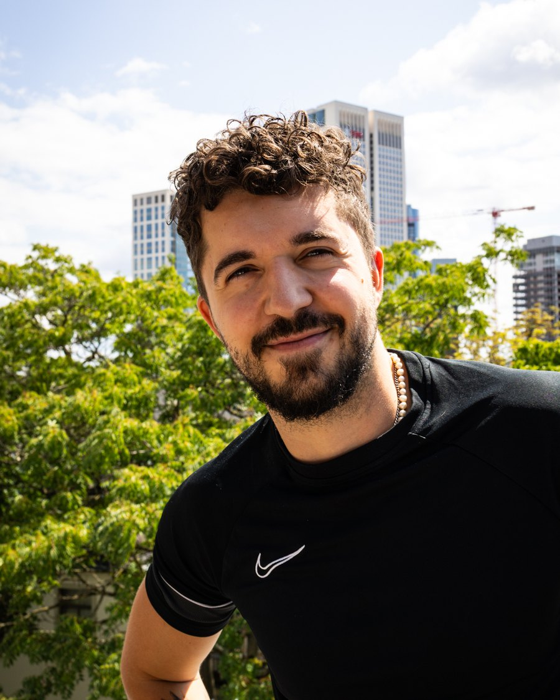

Ich weiß, wie es ist, wenn man gar nichts hat. Und ich weiß, wie es ist, wenn man viel hat. Gefühlt hab ich schon hundert Leben gelebt.

Ich bin in einfachen Verhältnissen aufgewachsen. Als ich 11 war, ist meine Mutter abgehauen. Mein Vater war nur am Arbeiten und emotional nicht da.
Ich hab früh angefangen zu kiffen und mich ins Gaming geflüchtet.
Dann ist mein Vater auf einmal an viel Geld gekommen. Von heute auf morgen war ich das Rich Kid. Party, Hedonismus, alles ausgeben. Bis ich mich wirklich kaputt gemacht hab.
2017 bin ich in der Klinik gelandet. Angst- und Panikstörung, Untergewicht: 50 Kilo bei 1,87 Meter.
Im normalen Krankenhaus haben sie mir gesagt: Du bist gesund, geh nach Hause. Die konnten mir nicht helfen.
In einer psychosomatischen Klinik hab ich dann zum ersten Mal Therapie gemacht. Antidepressiva haben mich über Wasser gehalten. Geholfen haben sie nicht.
Ich bin nach Sylt gezogen und war durch den Sport wieder fit. Aber ich hab weiter Status und Geld gejagt. Erst war es halb Party, halb Selbstoptimierung. Als ich die Party nicht mehr tragen konnte, wurde die Selbstoptimierung meine nächste Flucht.
Erst Hedonismus, dann Selbstoptimierung. Beides kam aus demselben Gefühl: Ich bin nicht gut genug. Ich musste mir meinen Wert verdienen, mit Leistung.
Ich war lange sehr wissenschaftlich unterwegs, mit westlicher Medizin. Dann bin ich nach Thailand und Mexiko gereist und hab mir auch die andere Seite angeschaut.
Beim Breathwork in Mexiko kam der Durchbruch. Ich hab mich zum ersten Mal wieder mit meinen Gefühlen verbunden und wirklich nach innen geschaut.
Ich hab alles ausprobiert und mir mein eigenes Bild gemacht. Nicht alles, was die Wissenschaft sagt, stimmt. Und nicht alles Spirituelle ist Unsinn. Ich nehme das Beste aus beiden Welten. Was bei mir funktioniert hat, gebe ich weiter, und es hat schon anderen geholfen.
Es hat Jahre gedauert, bis ich meine Muster gefunden hab. Das waren die drei größten:
„Ich bin nur was wert, wenn ich außergewöhnlich bin.“
Weil meine Mutter so früh gegangen ist, hab ich mich nicht gesehen gefühlt. Also dachte ich, ich muss besonders sein. Mein Vater hat sich über Leistung definiert, also hab ich das auch getan: Ich muss viel leisten, damit ich geliebt werde.
Das ist ein ewiger Kreis. Die Messlatte verschiebt sich immer weiter, und du wirst nie gut genug sein, um diese Lücke zu füllen. Meine Sicherheit hing an einer Bedingung. Deshalb konnte sich mein Nervensystem nie sicher fühlen.
„Ich darf erst anfangen, wenn ich alles verstanden hab.“
Ich dachte, ich muss mich erst bereit fühlen. Dahinter steckte die Angst vor Ablehnung: Wer gar nicht erst anfängt, kann auch nicht bewertet werden.
Ich wollte immer schon der Mike aus der Zukunft sein, mit dem eigenen Gesundheitszentrum. Der Philosoph Kierkegaard nennt das die Verzweiflung der Möglichkeit: Du verlierst dich in allem, was du sein könntest, und fängst nie an. Was ich heute schon tragen konnte, war mir nie genug.
„Wenn es hart wird, zieh ich mich raus.“
Mein Vater hat mir das Leben so leicht wie möglich gemacht. Wenn ich für eine Klausur nicht gelernt hatte, hat er mir eine Entschuldigung geschrieben. So hab ich gelernt, mich aus allem rauszuwinden, was unangenehm war. Später hießen meine Entschuldigungen Alkohol, Drogen und Gaming.
Nachdem ich mit der inneren Arbeit angefangen hab, war ich richtig lange richtig einsam. Mein alter Freundeskreis war weiter am Fliehen, mit Alkohol und Drogen. Ich mag die Jungs, aber ich konnte da nicht mehr mitgehen.
Es hat gedauert, bis ich Menschen gefunden hab, die mir guttun und denselben Weg gehen.
Erst als ich verstanden hab, dass ich jetzt schon wertvoll bin, ohne Bedingung, hat mein Nervensystem lockergelassen. Seitdem kann ich klein anfangen und das tun, was ich heute tragen kann.
Heute bin ich zum ersten Mal in meinem Leben glücklich. Deshalb ist es jetzt Zeit, anderen dabei zu helfen.
Genau diese Sätze finden wir auch bei dir.